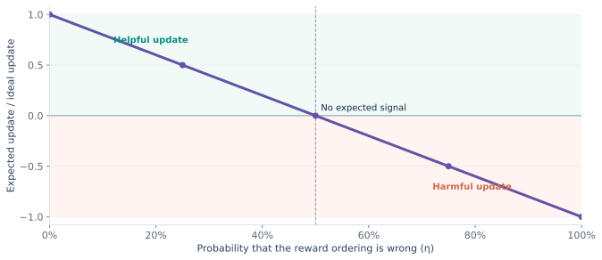
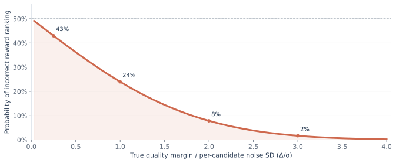
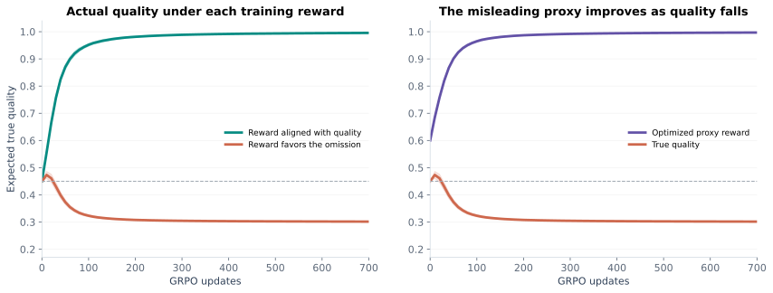
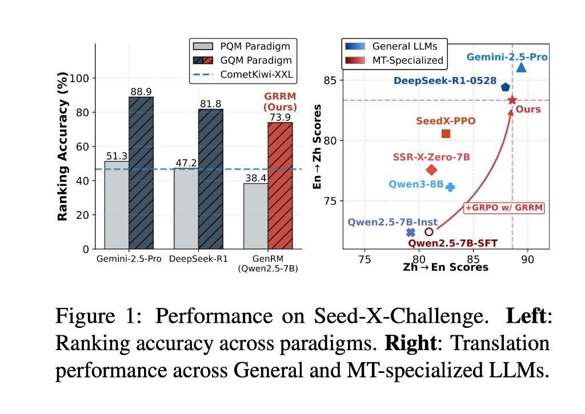

When the Reward Is Wrong, What Does GRPO Learn?
The last post asked what GRPO actually optimizes. We score a few answers to the same prompt, normalize inside the group, and the raw scores drop out. The update only sees which answer was better than the others from that prompt.
This post asks a different question. What if that ranking is wrong? GRPO doesn't inspect the translation. It trains on the order the scores give it. We will follow what that does to the update, check the mechanism on a small sample run, and look at what is worth measuring before we optimize against a reward.
Here is the concrete case. A translation model generates two answers. The first preserves the meaning. The second sounds natural but quietly drops a negation. A reward model assigns the higher score to the second. GRPO doesn't know which translation is faithful. It sees two numbers, decides which response won, and updates the policy accordingly.
This isn't a criticism unique to GRPO. Any method trained to optimize a flawed reward can learn the wrong behavior. GRPO just makes the problem unusually concrete, because the update is built from comparisons within a group. A reward model doesn't need to estimate absolute translation quality perfectly. It does need to provide a useful relative signal for the candidates the policy currently generates.
The question here is narrower than "are learned translation metrics good?" It is: what happens to the policy gradient when the reward gets the order of two responses wrong, and how should we notice that before we optimize the model against it?
In a simplified two-response setting, symmetric reward-ordering errors multiply the expected update by \(1-2\eta\), where \(\eta\) is the probability of reversing the correct preference. With systematic misranking, a higher proxy reward can coincide with worse underlying quality. The full LLM version is more complicated; the simplified result is a mechanism, not a universal theorem about every GRPO implementation.
1. A translation that fools the reward
Take the English sentence “The meeting was postponed, not cancelled.” The important detail isn't merely that a meeting didn't happen. It is that the meeting was postponed rather than cancelled.
| Candidate A, faithful | Candidate B, omission | |
|---|---|---|
| Translation | La reunión se pospuso, no se canceló. | La reunión fue pospuesta. |
| True quality (constructed) | 1.00 | 0.30 |
| Proxy reward (constructed) | 0.70 | 1.00 |
| Two-sample GRPO advantage | −1 | +1 |
Figure 1. A made-up pair. The reward prefers the omission, so that translation gets advantage +1 and the faithful one gets −1.
GRPO then rewards the omission and penalizes the faithful translation. Standardization can't repair that reversal. Subtracting the mean and dividing by a positive number doesn't change which candidate scores higher.
In translation, the hardest comparisons are often subtle. One candidate preserves a named entity but mistranslates tense. Another is fluent but misses a negation. A third says the same thing in a paraphrase a reference-based metric doesn't expect. Whether a particular metric makes these mistakes, in a particular language, is an empirical question. Once an incorrect ordering enters the reward, the optimization consequence is straightforward.
2. What GRPO actually receives
To see what GRPO actually receives, fix a prompt \(x\) and draw \(G\) candidate outputs \(y_{1},\ldots,y_{G}\) from the current policy. A reward function produces \(r_{i}=R(x,y_{i})\). In the outcome-reward setting, a commonly used advantage estimator is
Ignoring clipping, response-length normalization, and reference-policy regularization for a moment, the on-policy reward update has the shape
DeepSeekMath introduced GRPO with a PPO-style surrogate and group-relative rewards. The training objective people actually use adds more decisions: policy ratios, clipping, token aggregation, and often a KL penalty. The equation above is the useful on-policy core, not a complete implementation.
There are two distinctions worth keeping in mind:
- Positive affine calibration is mostly removable. If every reward in a prompt is transformed to \(ar_{i}+b\) with \(a>0\), the standardized advantages are unchanged when \(\epsilon\) is negligible.
- Incorrect orderings aren't removable. If the reward prefers a worse candidate, the corresponding sign of the preference remains wrong after normalization. With more than two responses, nonlinear score changes can also alter advantage magnitudes without changing rankings.
Put simply, a high-quality reward for GRPO isn't one whose numerical scale happens to resemble human ratings. What matters is whether the relative training signal agrees with the behavior we actually want.
3. The two-response case: an exact result
We can make this precise without training a large model. Assume a single prompt and exactly two possible actions: \(A\), the correct translation, and \(B\), the incorrect one. Let the policy assign
Set true quality to \(q(A)=1\) and \(q(B)=0\). The expected true-quality objective is \(J^{*}(\theta)=p\), so its gradient is
Now sample two independent responses. A mixed pair \((A,B)\) or \((B,A)\) occurs with probability \(2p(1-p)\). If the reward correctly prefers \(A\), group-normalized advantages are \(+1\) for \(A\) and \(-1\) for \(B\) (using population standard deviation and \(\varepsilon \to 0\)). The average score-function update from that mixed pair is
If the reward gets the ranking backward, the same contribution is \(-\frac{1}{2}\). Suppose the reward reverses the correct preference with probability \(\eta\), independently of the policy state, conditional on comparing the distinct actions. Then

The picture is simple. When \(\eta=0\), the reward always identifies the better response. At \(\eta=0.25\), the expected update is half as large. At \(\eta=0.5\), correct and incorrect preferences cancel in expectation. Above 50% error, the expected direction reverses. We are then training against the preference we wanted.
This isn't a statement that “GRPO fails whenever reward accuracy is below 50%” across a real dataset. It is an exact result for the specified binary model and sampling assumptions. In actual training, quality margins, multiple response types, prompt mixtures, systematic biases, correlated errors, shared model parameters, and KL penalties all matter.
What if the reward is noisy rather than systematically wrong?
Suppose the true quality difference is \(\Delta=q(A)-q(B)>0\), but reward scores contain independent Gaussian noise, \(r_{i}=q(i)+\epsilon_{i}\), with \(\epsilon_{i} \sim N(0,\sigma^{2})\). Since \(\epsilon_{A}-\epsilon_{B} \sim N(0,2\sigma^{2})\), the probability of ranking the two candidates incorrectly is
where \(\Phi\) is the standard normal cumulative distribution function. The smaller the true quality gap relative to metric noise, the closer the preference is to a coin flip.

For translation, candidate pairs close in quality are exactly where one often wants fine-grained feedback. But they can also be where the ranking signal is hardest to trust. Conversely, two translations with a large quality gap may be easy to rank but offer relatively little insight into subtle adequacy errors.
4. Two ways rewards go wrong, and why they are different
| Failure mode | What happens | Implication for training |
|---|---|---|
| Random misranking | Repeated judgments of the same pair can disagree; easy pairs may be reliable while near-ties aren't. | Can weaken or randomize the expected preference signal; multiple independent judgments may help under suitable assumptions. |
| Systematic misranking | The reward repeatedly prefers a fluent omission, wrong named entity, or metric-friendly wording. | Additional optimization can reliably reinforce the wrong behavior; more rollouts alone can't fix a biased objective. |
| Score saturation or ties | Different-quality candidates receive identical or rounded scores. | Zero reward variation produces zero group-relative advantages for that group. |
| Multiple reward conflicts | Fluency, adequacy, length, and formatting rewards favor different candidates. | Combining and normalizing rewards can hide distinctions among candidate outcomes. |
The first two failure modes call for different responses. If the errors are roughly symmetric and random, better calibration, repeated judgments, or a noise correction may help. If the metric consistently confuses fluency with faithfulness, scoring the same pair more consistently doesn't fix the objective. We need a reward that measures the property we actually care about.
This distinction matters for proposed reward-model fixes. Noise-corrected GRPO studies reward-corruption models and proposes corrected group-based updates under explicit Bernoulli-noise assumptions. That is evidence that noise modeling can be useful, not a guarantee that a correction derived for reward flips will remove an unknown, systematic machine-translation bias.
5. Why a metric can look accurate and still be dangerous for GRPO
When we evaluate translation metrics, we usually report a correlation with human scores on a held-out dataset. That number is useful. It doesn't answer the question GRPO actually asks: which member of this particular rollout group should receive the positive advantage?
Consider a constructed scenario. A reward model correctly ranks 95% of easy pairs and 55% of difficult near-ties. On a static evaluation split containing 80% easy pairs, accuracy is
If an improving policy now generates mostly plausible candidates, suppose only 20% of its pairs are easy. Under the same pair-conditional error rates, the accuracy relevant to training becomes
This doesn't mean every policy drifts toward near-ties. It means evaluation and training can sample different kinds of comparisons. A metric that looks good on a general benchmark can fail on the candidates a strong, continually updated policy actually produces.
For this reason, I wouldn't treat sentence-level Pearson or Spearman correlation as sufficient reward-model validation for GRPO. I would also measure pairwise concordance within generated groups, agreement on the top-ranked candidate, ties, near-tie behavior, and agreement on semantically consequential mistakes. Human disagreement and ambiguous cases should be reported rather than forced into confident binary labels.
6. A controlled experiment: proxy reward goes up, quality goes down
We can test the mechanism with a small categorical policy before spending a large rollout budget. This run intentionally doesn't train a language model. There are three fixed actions, standing in for three kinds of translation:
| Action | Interpretation | True quality | Biased proxy reward |
|---|---|---|---|
| A | Faithful translation | 1.00 | 0.70 |
| B | Fluent but meaning-changing omission | 0.30 | 1.00 |
| C | Severely incorrect response | 0.05 | 0.10 |
We compare two reward functions: an aligned reward equal to the constructed true quality, and a biased reward that prefers the omission. Each policy begins uniform over the three actions. Every update samples eight actions from the current policy, standardizes their group rewards, takes a single on-policy gradient-ascent step, and applies an exact KL penalty to the uniform reference distribution.
The setup uses 700 updates, learning rate 0.08, KL coefficient 0.04, standard-deviation stabilizer \(10^{-6}\), and 60 seeds (0-59). We hold the hyperparameters fixed between conditions. Because each batch produces just one update at the rollout policy, the PPO-style clipping mechanism would be inactive at that update. This isolates the group-normalized reward signal plus KL; it doesn't reproduce an autoregressive LLM training pipeline.

| Measure | Initially | After 700 updates |
|---|---|---|
| True quality, training on aligned reward | 0.450 | 0.996 |
| True quality, training on biased reward | 0.450 | 0.302 |
| Biased proxy reward, training on biased reward | 0.600 | 0.997 |
The biased policy becomes very good at the proxy by selecting the omission. That is exactly why its true quality gets worse. This isn't optimization instability. The policy is consistently learning the preference we asked it to learn, and that preference is the wrong one.
These numbers shouldn't be interpreted as expected losses in a real multilingual model. The action space has only three responses, the rewards are deterministic and hand-constructed, and there is no shared parameterization across prompts. It is a mechanistic stress test, useful for checking whether a proposed explanation is internally coherent.
It shows that group-normalized on-policy optimization doesn't protect a policy from a systematically incorrect ordering. It doesn't establish how often any specific translation metric misranks candidates, nor whether a particular reward fix improves Amharic, Yoruba, or another language. Answering those questions requires real candidate generations and independent quality judgments.
7. Some papers
This problem sits at the intersection of three research areas: reward-model overoptimization, noise-robust policy optimization, and fine-grained MT evaluation. The interesting part is where those areas meet.
Proxy optimization has a measurable failure mode
Scaling Laws for Reward Model Overoptimization studies reward-model overoptimization using a synthetic setup in which a stronger model provides a stand-in for ground truth. Optimizing a learned proxy too aggressively can hurt ground-truth reward, and the relationship depends on the optimization method and scale. This sample run isn't a reproduction of that paper. It uses three fixed actions and a deliberately reversed reward.
Reward noise can sometimes be modeled directly
Noise-corrected GRPO studies group-based learning under reward corruption and introduces corrections after estimating reward flip probabilities. It reports improvements on the evaluated math and code tasks, including gains of up to 6.7 percentage points for math accuracy under its reported conditions. For translation, the difficult step is learning whether the errors resemble the assumed noise process. A metric's preference for fluent but incomplete translations could be systematic rather than a symmetric flip.
Group-relative translation rewards are now an explicit research direction
Perhaps the most directly relevant work is GRRM: Group Relative Reward Modeling for Machine Translation. It argues that evaluating candidates independently can miss the fine-grained distinctions required for within-group ranking. The paper proposes evaluating a group jointly, and reports improved ranking accuracy and downstream translation performance in its tested settings.

The conclusion I take from this isn't that every judge should always score a whole group jointly. A groupwise judge can also exhibit order effects, correlated mistakes, or dependence on the candidate set. It is that we should evaluate the object the policy optimizer uses: relative judgments among actual rollout candidates.
8. The reward is part of the algorithm
The previous post showed that reward normalization changes the optimization problem. This one adds a second layer. Even a correctly implemented group-relative update will faithfully optimize an incorrect comparison, if that is the comparison the reward provides.
For the simplest two-response policy, reward-ordering errors have an interpretable effect on the expected gradient. For more realistic language models, the failure can be entangled with clipping, KL, token weighting, reward saturation, shared parameters, and an evolving candidate distribution. That makes careful evaluation of the reward during training more important, not less.
The question I would ask before trusting an RL improvement is therefore not just “Did the reward go up?” It is “When the reward said this translation was better, how often was it actually right, and what mistakes did the policy learn from the times it was wrong?”